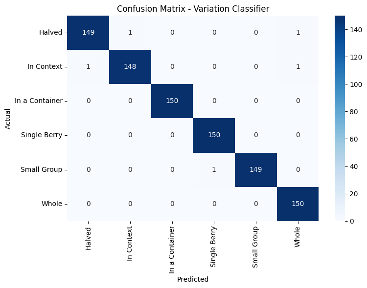

🍇 Blackberry & Lime Classifier
This is the final submission for the CSE 455/555 Term Project. As the CV Engineer, I built a deep learning pipeline to classify images of two selected produce items — blackberry and lime — and identify their photographic variations using state-of-the-art transfer learning models (ResNet18).
📌 Project Overview
- Produce classification: 2 classes (blackberry, lime)
- Variation classification: 6 classes (Halved, Whole, In Context, Small Group, etc.)
- Models used: Pre-trained ResNet18 + Transfer Learning
- Accuracy: ~99–100%
🚀 Try the Live Demo
🔗 Open Gradio Demo on Hugging Face📊 Model Results
Produce Classifier (2-class)

Variation Classifier (6-class)
📁 Files
produce_classifier.pth– trained PyTorch model (2-class)variation_classifier.pth– trained PyTorch model (6-class)app.py– Gradio app interface
📝 Final Report
The scientific report is available here: 📄 report.pdf (or replace this with in-page Markdown).